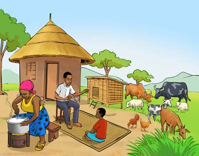
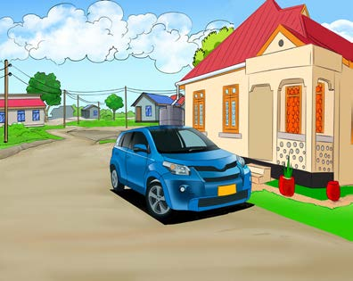

Mazingira ya nyumbani
Kazi ya kufanya namba 3
Chunguza Kielelezo namba 5, kisha jibu maswali yanayofuata:


Kielelezo namba 5: Mazingira ya nyumbani
Maswali
1. Ni vitu gani unaviona katika Kielelezo namba 5?
2. Ni vitu gani katika Kielelezo namba 5, vipo katika mazingira ya nyumbani kwenu?
Mazingira ya nyumbani ni vitu vyote vinavyopatikana mahali tunapoishi. Vitu hivyo vinaweza kuwa nje au ndani ya nyumba. Mazingira ya nje ya nyumba yanaweza kuwa na vitu kama miti, magari, maua, ndege, wadudu, wanyama, mito, milima, mabonde na vitu vingine kulingana na mahali tunapoishi. Pia, mazingira ya ndani ya nyumba yanaweza kuwa na vitu kama kitanda, makochi, vyombo vya kupikia, vifaa vya usafi, pamoja na vitu vingine vyote